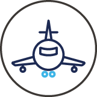
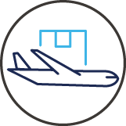

in Story & News
Wings of Korea,
Connecting the Skies
of the World
Korean Air
Since its founding in March 1969, Korean Air has spent the past 56 years charting flight paths across the globe and establishing itself as a world-class airline. This past March, the airline unveiled a new corporate identity (CI) for the first time in 41 years, attracting widespread attention both in Korea and abroad. As Korea’s flagship carrier, Korean Air is setting the vision for the future of global aviation.
By Hye-won Kim
Photo Credit Korean Air
Fleet
163aircraft (as of April 2025)
Passenger Traffic
23.55million passengers (2024)
Destinations
117cities in 40countries (as of April 2025)
117cities in
40countries (as of April 2025)
Cargo Traffic
1.56million tons (2024)
From a Small National Carrier to a Global Airline
In March 1969, Korea’s first private national airline was born. In a pivotal moment for Korean civil aviation, Hanjin acquired the state-run Korean National Airlines and was rebranded as Korean Air. The ambitious undertaking began with formidable challenges: the airline faced significant financial hurdles, including a debt of KRW 2.7 billion (equivalent to about KRW 76.9 billion in today’s value), a mere eight aging aircraft, and just three international routes to Japan. The company’s flight cancellation rate reached an unprecedented 17.5%, among the highest in global aviation history. In light of these challenges, the government approached Hanjin Group founder Choong-hoon Cho, who, after careful deliberation, accepted the offer—not for profit, but in the spirit of national service.
Driven by a sense of mission, Chairman Cho swiftly reorganized and stabilized the airline through strong internal restructuring and personnel management. In December 1969, he launched a five-year strategic plan aimed at transforming Korean Air into a global player. This included bold investments in modern aircraft, route expansion, and automation. As a result, the company’s revenue more than doubled, growing from KRW 3.58 billion in 1969 to KRW 7.61 billion in 1970.
Building on its routes in Japan and Southeast Asia, Korean Air set its sights on North America and Europe. After relentless efforts the airline began offering routes to America (Seoul–Tokyo–Honolulu–Los Angeles) in April 1972 and to France (Seoul–Paris) in March 1975. The airline further expanded into Oceania and South America, adapting quickly to global industry trends and Korea’s easing travel restrictions. By the 1990s, Korean Air had successfully established a round-the-world network. As of April 2025, the airline operates 163 aircraft, flying to 117 cities in 40 countries around the world.
Safety and Customer Satisfaction as Top Priorities
Throughout its journey, Korean Air has demonstrated remarkable resilience, successfully navigating numerous global challenges including the global oil shock, the 1997 Asian financial crisis, the 9/11 attacks, and the SARS outbreak. The COVID-19 pandemic posed yet another challenge, but the airline responded proactively by pivoting to cargo operations and leading innovation in global logistics. By converting passenger planes into freighters and leveraging decades of cargo expertise, Korean Air continued to thrive even during the industry-wide downturn.
The airline’s top priority has always been safety and customer satisfaction. Korean Air manages safety risks through its Board of Directors’ Safety Committee and has implemented an AI Contact Center (AICC) platform to expand chatbot-based services. It has also collaborated with top global brands to refresh its inflight tableware, cutlery, bedding, and amenities. These ongoing efforts have earned the airline wide recognition: it became the first Korean airline to receive Consumer-Centered Management (CCM) certification three times in a row; it was named a 5-Star Airline by Skytrax for five consecutive years; and it was inducted into the Aviation Hall of Fame by Air Transport World, a leading industry publication.
One Global Path, KE Way
Looking to the future, Korean Air is focused on creating a unified global mega-carrier through the acquisition and integration of Asiana Airlines. This strategic merger fulfills a key national objective while also promising to deliver enhanced service and a more robust network for travelers worldwide. Since announcing the acquisition in November 2020, the airline has completed regulatory reviews by competition authorities in 14 countries and officially made Asiana a subsidiary in December of last year.
In celebration of its 56th anniversary this March, Korean Air announced a new corporate value system—KE Way—and reaffirmed its commitment to becoming a trusted and beloved global network carrier. The airline also revealed a new CI and updated aircraft livery, modernizing the Taegeuk symbol to reflect a premium brand image befitting Korea’s flagship carrier. From renewed inflight menus to enhanced onboard experiences, Korean Air is extending these enhancements across all routes, continuing its mission to connect people, communities, and the world for a better tomorrow.